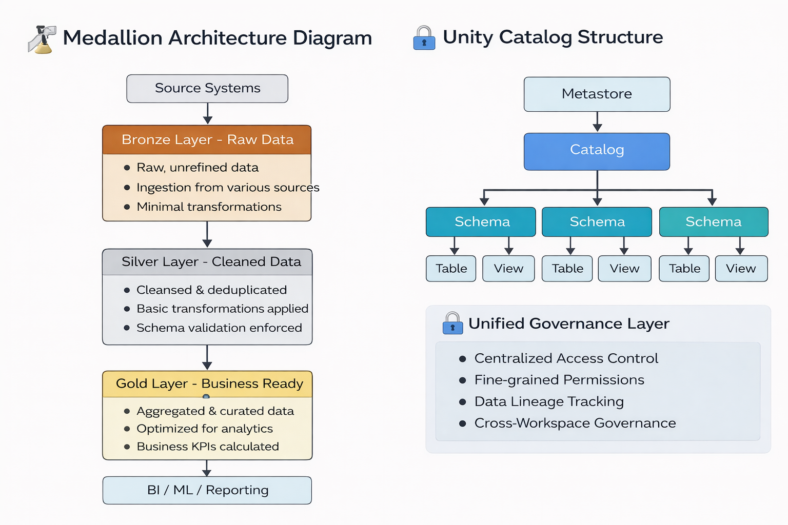
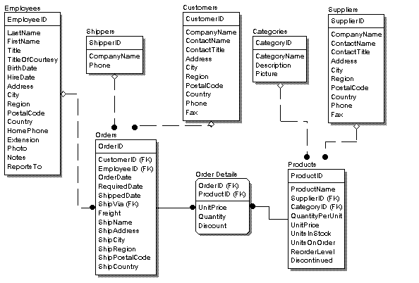

1️⃣ Introduction¶
📘 What is Databricks?
Databricks is a cloud-based unified data and AI platform built on top of Apache Spark that enables organizations to process, analyze, and build machine learning solutions on large-scale data.
It is designed around the Lakehouse architecture, which combines:
Data Lake capabilities → Low-cost storage, flexibility, support for structured and unstructured data
Data Warehouse capabilities → High performance, ACID transactions, governance, and BI optimization
This means Databricks gives you the flexibility of a data lake and the reliability of a data warehouse in a single platform.
🚀 Why Databricks is Called a Managed Service
Databricks is a managed service, meaning you do not need to manually set up or maintain infrastructure.
Instead of configuring servers, installing Spark, handling failures, and tuning performance — Databricks manages these for you automatically.
It takes care of:
Cluster management Infrastructure provisioning Scaling Performance optimization Security integrations
This allows:
Data Engineers → to focus on pipelines
Analysts → to focus on insights
Data Scientists → to focus on models
Instead of spending time on DevOps or infrastructure setup.
1️⃣ Cluster Management
Cluster management refers to the automatic creation, configuration, monitoring, and termination of compute clusters used to process data.
👉 Databricks automatically manages Spark clusters so users don’t need to manually configure servers.
2️⃣ Infrastructure Provisioning
Infrastructure provisioning is the process of setting up cloud resources such as virtual machines, storage, and networking.
👉 Databricks automatically provisions the required cloud infrastructure (AWS, Azure, GCP) when you start a cluster.
3️⃣ Scaling
Scaling is the ability to increase or decrease computing resources based on workload demand.
👉 Databricks supports auto-scaling, meaning it can add or remove worker nodes automatically depending on workload size.
4️⃣ Performance Optimization
Performance optimization involves tuning system resources and execution strategies to run workloads faster and more efficiently.
👉 Databricks optimizes Spark jobs automatically using features like query optimization, caching, and optimized execution engines.
5️⃣ Security Integrations
Security integrations ensure that data access and system usage are secure and compliant with organizational policies.
👉 Databricks integrates with cloud IAM systems, role-based access control, encryption, and Unity Catalog for governance.
💡 In Simple Words
Without Databricks → You manage servers, install Spark, scale manually, secure everything yourself.
With Databricks → You just write code. The platform manages everything else
This allows data engineers, analysts, and data scientists to focus on building data solutions instead of managing infrastructure.
Lakehouse architecture workflow diagram¶

2️⃣ Key Components of Databricks
Workspaces – Collaborative environment for notebooks, jobs, and dashboards
Clusters – Compute resources to run Spark workloads
DBFS (Databricks File System) – Distributed file system abstraction
Delta Lake – Storage layer providing ACID transactions
Unity Catalog – Centralized governance layer
Competetors of Delta lake are :
Apache Iceberg,
Apache Hudi,
Snowflake,
Microsoft Fabric (OneLake)
🔎 Data Lake vs Data Warehouse vs Lakehouse¶
| Feature | Data Lake | Data Warehouse | Lakehouse (Databricks) |
|---|---|---|---|
| Storage Cost | Low | High | Low |
| Schema | Flexible | Structured | Structured + Flexible |
| Performance | Medium | High | High |
| ACID Support | ❌ No | ✅ Yes | ✅ Yes (Delta Lake) |
| Governance | Limited | Strong | Strong (Unity Catalog) |
| Supports ML | ✅ Yes | Limited | ✅ Yes |
3️⃣ What is Metadata?
Metadata is “data about data.”
It provides information that describes, explains, or gives context to other data.
Examples of Metadata:
Table name
Column names
Data types
File location
Owner
Created date
Permissions
Metadata helps in:
Data discovery
Governance
Access control
Query optimization
4️⃣ Managed Tables vs External Tables
Databricks supports two main types of tables:
🔹 Managed Tables
In managed tables, Databricks manages both metadata and physical data storage.
Characteristics:
Storage location controlled by Databricks
Dropping table deletes both metadata and data
Strong governance using Unity Catalog
Suitable for fully controlled environments
Multi-tool Access: Difficult
Data Governance: Fully governed
Use Case: Quick analytics, internal BI systems, tightly controlled environments
🔹 External Tables
In external tables, Databricks manages only metadata, while data remains in external storage (like S3, ADLS, GCS).
Characteristics:
Data stored outside Databricks-managed location
Dropping table removes only metadata
Flexible integration with other tools
Requires governance discipline
Multi-tool Access: Easy
Data Governance: Flexible but requires discipline
Use Case: Shared datasets, existing data lakes, multi-tool ecosystems
🔎 Managed vs External Tables¶
| Feature | Managed Table | External Table |
|---|---|---|
| Metadata Management | Databricks | Databricks |
| Data Storage | Managed by Databricks | Stored externally (S3/ADLS/GCS) |
| Data Deletion | Metadata + Data deleted | Only metadata deleted |
| Multi-tool Access | Limited | Easy |
| Governance | Fully controlled | Flexible |
| Best For | Internal analytics | Shared datasets / Existing data lakes |
5️⃣ Lakehouse Architecture
Databricks implements the Lakehouse Architecture, which combines:
Data Lake Data Warehouse
Cheap storage High performance
Flexible schema Structured governance
Raw data storage BI-ready data
Lakehouse provides:
ACID transactions
Schema enforcement
Time travel
Batch + Streaming support
📊 Lakehouse Architecture Overview¶
6️⃣ 🏗️ Medallion Architecture (Lakehouse Design Pattern)
The Medallion Architecture is a data design pattern used in Databricks to organize data into three layers:
🏗️ Medallion architecture and unity catalog overview¶

🥉 Bronze Layer – Raw Data
Ingested data from source systems Minimal transformation Used for auditing and traceability
🥈 Silver Layer – Cleaned & Transformed Data
Data cleaning Deduplication Standardization Schema enforcement
🥇 Gold Layer – Business-Level Data
Aggregated and curated datasets Business KPIs Optimized for reporting and analytics
This layered approach improves:
Data quality Maintainability Performance Governance
📊 Bronze vs Silver vs Gold¶
| Layer | Purpose | Data Quality | Transformation Level | Used By |
|---|---|---|---|---|
| Bronze | Raw ingestion | Low | Minimal | Data Engineers |
| Silver | Cleaned & standardized | Medium | Moderate | Data Engineers / Analysts |
| Gold | Business-ready data | High | Aggregated & Curated | BI / Business Users |
Source → Bronze → Silver → Gold → BI / ML
7️⃣ Delta Lake
Delta Lake is the storage layer of Databricks that adds reliability to data lakes.
Delta Lake is a open-source storage layer that brings ACID transactions, schema enforcement and time travel capabilities to data lakes.
It provides:
ACID transactions
Schema enforcement
Schema evolution
Time travel (versioning)
Scalable metadata handling
Delta Lake solves common data lake problems such as:
Dirty reads
Data corruption
Concurrent write issues
8️⃣ Unity Catalog
Unity Catalog is Databricks’ unified governance solution for data and AI assets.
It manages:
Tables
Views
Files
ML models
Permissions
Lineage tracking
Benefits:
Centralized access control
Fine-grained permissions (row/column level)
Data lineage tracking
Cross-workspace governance
It ensures secure and compliant data usage across the organization.
9️⃣ ACID Principles
Databricks (via Delta Lake) supports ACID properties:
A – Atomicity A transaction either fully completes or fully fails.
C – Consistency Data remains valid before and after a transaction.
I – Isolation Concurrent transactions do not interfere with each other.
D – Durability Once committed, data remains stored even if failures occur.
ACID ensures reliability in large-scale data systems.
🔒 ACID Properties in Delta Lake¶
| Property | Meaning | Example |
|---|---|---|
| Atomicity | All or nothing execution | Failed transaction rolls back |
| Consistency | Data remains valid | Constraints enforced |
| Isolation | Transactions do not interfere | Concurrent writes handled safely |
| Durability | Data remains after commit | Data persists after crash |
🔹 OLTP vs OLAP (Very Important for Data Engineers)
OLTP is for running daily business transactions, while OLAP is for analyzing data and generating insights.
Since you're moving towards Data Engineering / Analytics, understanding this clearly is very important.
🟢 What is OLTP?
OLTP = Online Transaction Processing
👉 Used for day-to-day operations 👉 Handles many small transactions
🏦 Example Systems
Amazon (placing an order)
Paytm (making payment)
Bank ATM withdrawal
📌 What Happens in OLTP?
When you:
Add an item to cart
Make payment
Transfer money
Book a ticket
The database:
Inserts data
Updates records
Deletes records
Ensures data consistency
🖼 OLTP Database Structure

✔ Highly normalized tables ✔ Fast inserts & updates ✔ Supports thousands of concurrent users
🔹 Example OLTP Query:
UPDATE orders SET status = 'Shipped' WHERE order_id = 101;
Small, fast transaction.
🔵 What is OLAP?
OLAP = Online Analytical Processing
👉 Used for analysis & reporting 👉 Works on large historical data
Used by:
Data Analysts
Data Scientists
Business Intelligence teams
📊 Example Systems
Tableau
Power BI
Snowflake
Databricks
🖼 OLAP Structure (Data Warehouse)


✔ Star schema
✔ Fact table + Dimension tables
✔ Aggregations
✔ Historical data
🔹 Example OLAP Query
SELECT region, SUM(sales) FROM sales_data GROUP BY region;
This scans millions of rows.
⚖ OLTP vs OLAP (Comparison Table)¶
| Feature | OLTP (Online Transaction Processing) | OLAP (Online Analytical Processing) |
|---|---|---|
| Purpose | Run business operations | Analyze business data |
| Users | Customers, application users | Analysts, data scientists |
| Data | Current / real-time data | Historical data |
| Queries | Simple (INSERT, UPDATE, DELETE) | Complex (aggregations, joins) |
| Speed | Milliseconds | Seconds / Minutes |
| Schema | Normalized | Star / Snowflake schema |
| Example DB | MySQL, PostgreSQL | Snowflake, BigQuery, Redshift |
🧠 Simple Real-Life Example
Think of a supermarket:
🛒 Billing counter → OLTP
📊 Monthly sales analysis → OLAP
Since you:
Work in analytics
Want Data Engineer / BI roles
👉 You will mainly work with OLAP systems 👉 But you must understand OLTP to design pipelines
OLTP vs OLAP Overview
OLTP (Online Transaction Processing) and OLAP (Online Analytical Processing) are two different types of database systems designed for different purposes.
Key Difference: OLTP is used to run daily business operations. OLAP is used to analyze data and generate insights.
OLTP (Online Transaction Processing) Definition
OLTP systems are designed to manage real-time business transactions. They handle a large number of small, fast operations such as insert, update, and delete.
Characteristics
Highly normalized tables (3NF)
Fast insert/update/delete
Ensures ACID properties
Handles thousands of transactions per second
Small queries
OLTP Architecture (Conceptual View)
OLAP (Online Analytical Processing) Definition
OLAP systems are designed for complex queries and data analysis. They work on large volumes of historical data.
Characteristics :
Star or Snowflake schema
Fact and dimension tables
Handles large datasets
Complex aggregations
Read-heavy workload
Simple Analogy
Supermarket example:
🛒 Billing counter → OLTP
📊 Monthly sales dashboard → OLAP
Important for Data Engineers
OLTP → Source systems
ETL/ELT → Moves data
OLAP → Data warehouse / Analytics system
Understanding both is critical for designing data pipelines.
Hirarchy in Databricks.
Workspace > Catalog > Schema > Tables
🔟 Summary
Databricks is a modern data platform that:
Implements Lakehouse architecture
Uses Delta Lake for reliability
Supports Medallion architecture for structured data processing
Provides centralized governance via Unity Catalog
Enables scalable data engineering, analytics, and AI workloads
It simplifies big data processing while maintaining enterprise-grade governance and reliability.